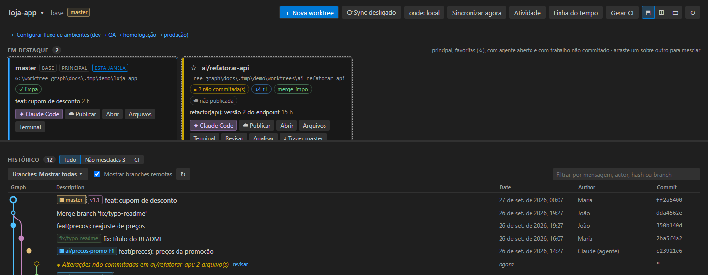
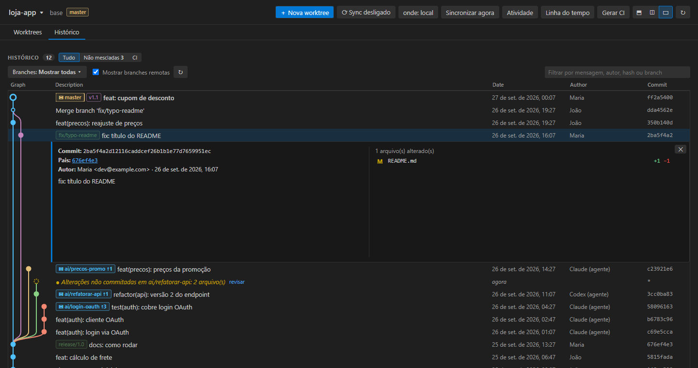

Vários agentes de IA trabalhando em paralelo, sem bagunçar o seu repositório
O AgentYard é uma extensão do VS Code que coloca cada agente — Claude Code, Codex, Gemini ou qualquer CLI — na sua própria git worktree e mostra tudo num painel: o que cada um mudou, o que conflita, o que está pronto para revisar e mesclar.
Tudo o que acontece nas worktrees, num lugar só
Feito para quem deixa agentes trabalhando em várias tarefas ao mesmo tempo.
Cards de worktree
Branch, alterações não commitadas, quanto está atrás e à frente da base e previsão de conflito antes de tocar em qualquer coisa.
Agente por worktree
Um clique abre o Claude Code (ou outro agente) num terminal já dentro da worktree, com sessões, retomada e uso de tokens.
Merge sem susto
Arraste um card sobre outro para mesclar. Antes, veja os commits que entram, os arquivos mexidos dos dois lados e os conflitos.
PR/MR e pipelines
Publique PRs no GitHub e MRs no GitLab, acompanhe a revisão e o CI de cada branch sem sair do editor.
Issues viram tarefas
GitHub, GitLab, Bitbucket, Azure DevOps, Jira e Redmine: comece uma issue e o agente já abre numa worktree com o contexto dela.
Fila e agendamento
Enfileire tarefas por worktree, agende execuções e compare várias tentativas do agente lado a lado.
Base sempre em dia
Quando a base anda, o AgentYard mescla nas worktrees limpas e roda sua verificação — localmente ou no CI.
Grafo e histórico
Todas as branches, worktrees, remotas e tags num grafo com filtro, e a situação da revisão de cada PR.

Arraste para mesclar
Cada merge pede confirmação mostrando quantos commits entram e se a simulação prevê conflito. Se der conflito, nada muda — e um botão abre o agente para resolver, testar e commitar.
O histórico conta quem fez o quê
Commits de pessoas e de agentes no mesmo grafo, com o que ainda não foi commitado em cada worktree e o status do PR de cada branch.

Preços
Comece de graça. Assine quando precisar de mais.
Grátis
US$ 0
para sempre, sem avisos
- Painel, grafo e histórico
- Worktrees, merge e análise de merge
- PR/MR com situação da revisão e pipelines
- Issues do GitHub, GitLab e Redmine
- Agente por worktree, sessões e uso do Claude Code
- Vários projetos, fluxo de ambientes e sync da base
Pro
US$ 8 / mês
1 pessoa, até 3 máquinas
- Tudo do Grátis
- Fila de tarefas, agendamentos e tarefa em lote
- Tentar N abordagens e comparar
- Revisão de PR/MR pelo agente
- Fila de merge e detector de sobreposição
- Atividade e custo por tarefa, linha do tempo e relatório do dia
- Bitbucket, Azure DevOps e Jira
- Checagens antes de mesclar/enviar e PR obrigatório
Times
US$ 12 / pessoa / mês
cobrado anualmente, por pessoa
- Tudo do Pro
- Uma licença com o número de pessoas do time
- Uma fatura para a empresa
- Suporte prioritário por e-mail
Teste o Pro de graça por 14 dias direto na extensão — o teste começa na primeira vez que você usa um recurso Pro. Preços em dólares americanos; impostos locais podem ser acrescentados no checkout, conforme o seu país. Cancele quando quiser: a assinatura vale até o fim do período pago. Reembolso integral em até 30 dias — veja a política de reembolso. Os pagamentos são processados pela Paddle.com, nossa revendedora oficial (Merchant of Record).
Dúvidas
Preciso do Claude Code para usar?
Não. O AgentYard funciona com qualquer agente de linha de comando — Claude Code, Codex, Gemini ou um comando seu — e também sem nenhum agente, só para organizar worktrees e branches.
Meu código sai da minha máquina?
Não. A extensão roda localmente e usa o git que você já tem. Integrações com GitHub, GitLab, Jira e outros usam as credenciais que você mesmo configurar. Veja a política de privacidade.
Como recebo a licença?
Logo depois da compra chega no seu e-mail uma chave de licença. No VS Code, rode o comando AgentYard: Ativar licença… e cole a chave. Nas assinaturas, a chave se renova sozinha enquanto a assinatura estiver ativa, e funciona mesmo sem internet por algum tempo.
Quem cobra no meu cartão?
A Paddle.com, nossa revendedora oficial. Ela processa o pagamento, emite a nota e cuida dos impostos do seu país. O nome que aparece na fatura é o da Paddle.
Como cancelo ou peço reembolso?
Pelo link no e-mail de confirmação da compra ou escrevendo para contato@SEU-DOMINIO. Reembolso integral em até 30 dias da compra.
O que precisa estar instalado?
VS Code 1.85 ou mais novo e git 2.38 ou mais novo. Funciona no Windows, macOS e Linux.